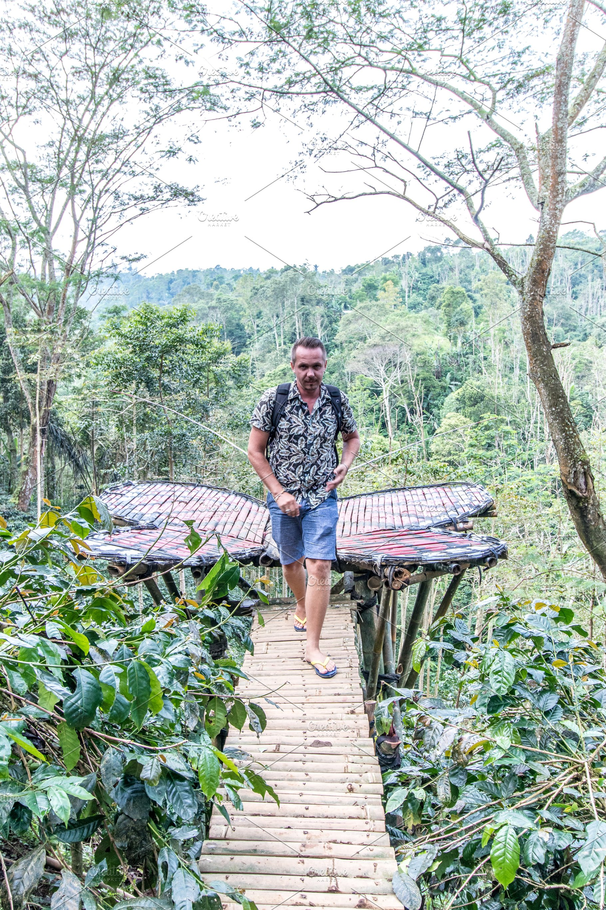
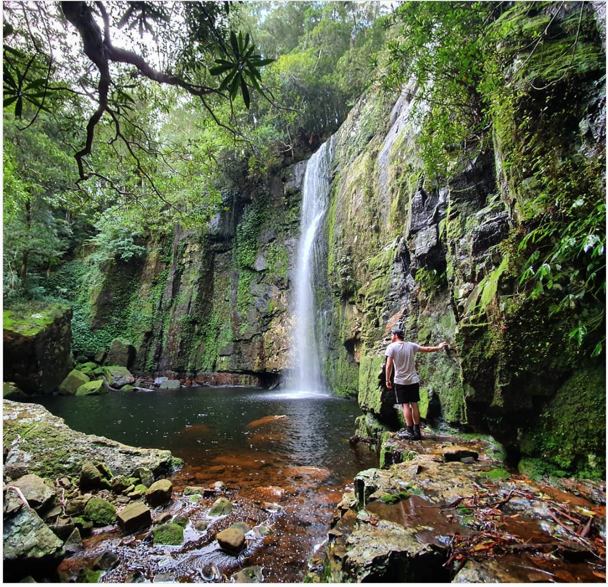
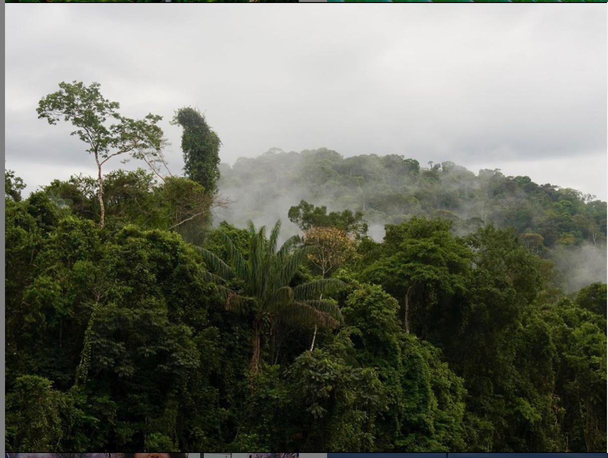
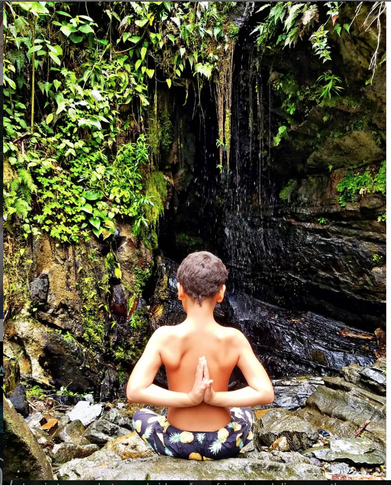

The Amazon Rainforest
Why you must visit
The Amazon Rainforest, the oldest surviving rainforest, represents over half the worlds remaining rainforests and contains an immense amount of biodiversity, much of which can not be found anywhere else! By living high above the canopy in our unique eco cabin you can witness and experience its beauty first hand.
About the Amazon Jungle
Watch our video!
- Running through the north of the rainforest is the Amazon river. Flowing a length of around 6,400km, it is the second longest river in the world.
- Around 400-500 indigenous Amerindian tribes call the Amazon rainforest home. It’s believed that about fifty of these tribes have never had contact with the outside world!
- This area of immense natural beauty is sometimes referred to as ‘the lungs of the Earth’. This is because the rich vegetation takes carbon dioxide out of the air, and releases oxygen back in. In fact, more than 20% of the world’s oxygen is produced by the Amazon. Talk about fresh air!
Exciting Activities
- Eating Ants!:The Lemon Ant is a species of tiny ants native to the Amazon. They are called “lemon ants” because of their vague tangy, lemony taste similar to lemon sherbet. Feel free to have a try: it won’t hurt you and is likely to become one of your most memorable experiences in the rainforest.
Worried about heights?

You get a free personal parachute to ensure you can enjoy your holiday in comfort.
- It's portable: Be safe 24/7 without even noticing you're wearing it.
- It's reliable: Works in all temperatures and doesn't need to be serviced.
- It's smart: Each parachute is GPS tracked so as soon as you descend, we'll have you back in the treehouse within 60 minutes.
Reviews
Some glowing reviews from previous happy tree-dwellers.
"This eco cabin is perfect for a family adventure, it’s situated deep in the jungle and the only thing that beats the location is the interior of the cabin which is no where short of unreal, there’s a small stove for those chilly nights , a kitchen equipped with everything you need and the bedroom where you without a doubt have the best nights sleep you have ever experienced listening to the sounds of the rainforest. " - Julie
"I didn't fall out once - Andrew

Latest from Instagram
  

Treefindr app
Enhance your canopy experience with our free app.
- It's educational: Explore the forest canopy with rich AR enhancements, enhancing your understanding of tree spexies and wildlife.
- It's Social: Share your finds to show off your holiday and highlight the importance of conservation.
- It's rewarding: Share pics you take with the app. The best ones get you discounts towards your next trip.